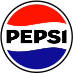

wonderMakr creates experiential vending machines that turn branded campaigns into interactive experiences.
Unlike traditional vending machines, xVend experiences can involve badge scanning, cameras, interactive screens, custom prizes, and other physical interactions.
As xVend projects grew, clients needed a clearer way to understand what they were getting, what they needed to provide, and how the experience worked.
Clients didn't fully understand what they were signing up for.
xVend onboarding relied on PDF documents originally created to sell the service, not guide clients after booking.
The documents were text-heavy, difficult to navigate, and did not clearly explain deliverables or technical requirements.
This resulted in repeated clarification requests and questions between project managers, agencies, and brand clients. Clarifications slowed approvals, created extra work, and extended project timelines.
How might we make xVend easier to understand for everyone involved?
An interactive onboarding experience that lets clients learn by exploring.
Instead of creating another static document, I designed an interactive onboarding experience that introduces the project step by step while giving users access to deeper information when they need it.
Explore the microsite
A clickable replica of the live campaign microsite, so clients see the experience their audience will use.
Explore the prizing experience
The prizing matrix becomes something clients can step through, rather than a table they have to decode.
Explore the dielines
Every side of the machine previewed at once, so artwork can be reviewed and compared quickly.
Serving companies like

Understanding where clients were getting stuck
I spoke with project managers, agency clients, and brand clients to understand where information was getting lost.
Project manager
Spent too much time explaining requirements and answering questions instead of moving projects forward.
Agency clients
Needed to understand xVend well enough to communicate requirements to their brand clients.
Brand clients
Needed enough context to understand what was being delivered and what they needed to provide.
They needed to
They needed to
They needed to
The common thread
Everyone needed the same thing: a clear source of truth that explained the experience without requiring someone from wonderMakr to walk them through it.
What if onboarding worked more like an interactive product than a PDF?
Traditional documentation wasn't well suited to a product as physical and unfamiliar as xVend. The research pointed to three core needs:
Understand the project
Give clients a clear picture of what they're getting and what they need to provide.
Experience the product
Let clients interact with unfamiliar xVend experiences instead of only reading about them.
Align stakeholders
Create one shared reference point that project managers, agencies, and brands could use throughout the project.
Designing the experience around how clients learn
I explored different ways to structure and explain the experience, starting with the overall information architecture and then moving into individual interactions.
User flows
I mapped the existing workflow to identify where users were getting stuck, then created a new structure that introduced essential information first and allowed users to go deeper when needed.
Exploring the interaction model
I explored different layouts and interaction models through wireframes, then reviewed them with the senior experience designer, CEO, and project managers. This helped validate the information hierarchy before moving into the final design.
Four decisions shaped how clients learn and navigate the experience
The challenge was finding the right structure, sequence, and interactions to help clients understand xVend without a walkthrough.
How should users move between the overview and detailed deliverables?
One flow
Users move through the overview and detailed deliverables as one continuous experience.
Separate flows
Users start with the essential information and open detailed deliverables when they need them.
How should technical information be introduced?
Lead with deliverables
Users see the technical requirements before exploring the experience they describe.
Lead with sample visuals
Users see the experience first, then explore the technical details behind it.
How should users navigate the dielines?
Scroll through
Users move through each side of the vending machine one at a time.
Tap through
Users can preview all sides at once and quickly navigate to the side they need.
How should the microsite demonstrate the physical interaction?
Mouse hover
Users hover over the microsite to reveal the interaction.
Badge drag and scan
Users drag a badge toward the scanner to simulate the physical interaction.
We created a reusable onboarding experience that makes xVend easier to understand.
The experience brings project information, interactive demos, dielines, and deliverables into one shared reference for clients and project teams.
What I learned
Information hierarchy shapes understanding
I learned that making information easier to understand isn't always about reducing it. In this project, changing what users saw first had a bigger impact than removing content.
Design within the full context
I learned to consider where and how an interaction will be used early in the process. When the badge interaction didn't translate well to touch devices, I had to rethink the interaction while keeping the same learning goal.
Where I’d take it next
Validate with clients
We didn't have time to test with clients. I would test the experience with new xVend clients to identify where they still hesitate or need clarification.
Expand the system
The first version focused on the microsite, dielines, and prizing matrix. Next, I would add shipping, logistics, and copy decks to make onboarding a more complete reference.